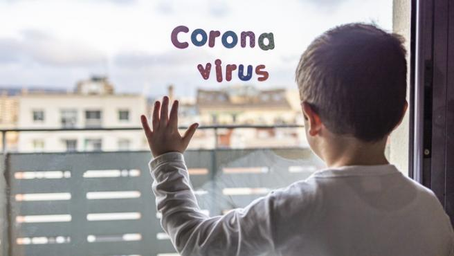

Ya paso mucho tiempo, terminamos las pruebas sin complicaciones, solo que ahora son trimestres (eso es nuevo), comienzo a extrañar los recreos y la chacota del salón, ahora todo es tan callado, no hablo con muchos compañeros pero trato de mantener comunicación con una buena cantidad.
Comunicaron una vez más 15 días para que termine la cuarentena, una vez más... una vez más! Comienza a ser estresante está situación, me estoy perdiendo en varios cursos, pero dijeron que nos apoyarán en este trimestre ya que nos estamos "adaptando" a está situación, y porque se cumple diez años del colegio,
Ya no entiendo la mayoría de los cursos, pero felizmente está la maravilla del internet para salvarme, aún puedo continuar.
Hoy conocí un juego llamado League of Legends por los anuncios de Youtube, se ve interesante, no hay nadie que me enseñe a jugarlo, así que toca jugar a la mala.
Me gusta mucho ese juego, la verdad no soy para nada bueno pero me divierte mucho, además de que no entiendo nada de ese juego, se puso a jugar otro compañero, eso nos hizo comunicarnos mucho mucho más de lo que nos comunicabamos.
Jugar en los ratos libres y hacer clases constantemente no esta para nada mal.
